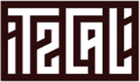
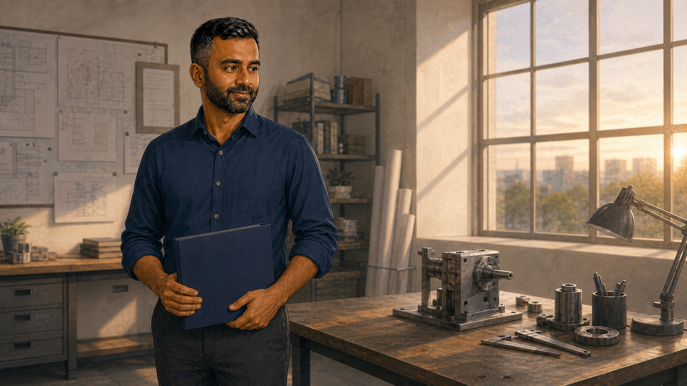
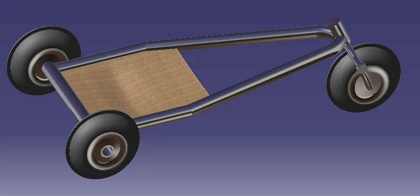

Mechanical design and testing.
At MKEC, I worked on more than 50 building projects. My work includes HVAC layouts and equipment schedules, along with college projects in data acquisition, structural analysis, and heat transfer.
Lebanon, OhioAdmitted to UC Mechanical Engineering for Spring 2027. Open to relocation.


Where I have worked and studied

The work behind the skills
From university lab work and building design to leading teams and building businesses. The story of what I learned along the way.
Watch the film
See the work behind the resume
Open a project for the drawings, measurements, and decisions behind it.

Comparing two vibration sensors
I helped assemble the setup with the team and analyzed the recorded sensor response.

Working through a lightweight frame
I shared the load, stress, and deflection calculations for our five person design team.

Measuring a centrifugal pump
Our team recorded flow, pressure, speed, and torque across twelve operating points.

Following the heat through an exchanger
My working sheets connect fluid properties, heat duty, convection, and fouling to the sizing calculation.

Connecting a layout to its schedules
Duct plans, elevations, and equipment data prepared within an engineering design and review team.

Making device testing traceable
I mapped the handoffs from intake and testing through grading, custody, and disposition.
Engineering work with an operating background
I began studying mechanical engineering at Wichita State and later worked in building design at MKEC. I have also opened restaurants, led teams of up to 120 people, and co-founded an electronics lifecycle company.
Those roles taught me to think about who will use a system, how it will be maintained, and what a team needs to carry out the work.
Read my resumeMechanical Design Engineer. Building systems, load calculations, layouts, and drawing coordination.
Co-founder. Electronics testing procedures, custody records, and product requirements.
Contract quality review of technical and business work against source records and calculations.
Staffing, training, budgets, and daily execution at iTZCALi, Hard Rock, EPIC Brands, and Raising Cane’s.
Tools I use
Building design
AutoCAD, Revit, Trane TRACE, and BIM 360 at MKEC.
Engineering analysis
Excel calculations and plots. LabVIEW data interpretation. CAD and CNC coursework at Wichita State.
Technical workflows
Python and SQLite with AI coding support. GitHub for version history and project documentation.